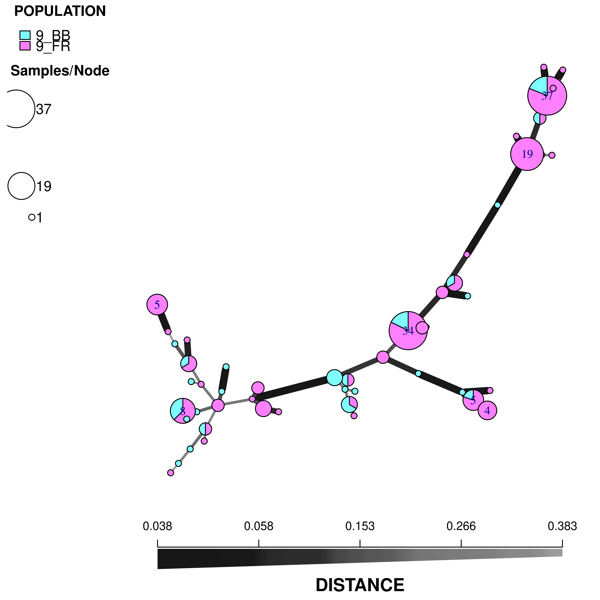

99: Minimum Spanning Networks
Minimum spanning networks are a great way to be able to visualize the connections between samples in your data set. In terms of clonal organisms, it can be a more powerful visualization tool than trees, especially for clonal organisms. In this chapter, we will show you how to construct and view minimum spanning networks on the command line and in an interactive viewer.
From the command line
Note:
This section will utilize Bruvo’s distance (Bruvo et al., 2004). It is important to note that calculating Bruvo’s distance is computationally different than other distances, so it has its own specialized functions for minimum spanning networks and bootstrapping that do not need a distance matrix:
| General function | Bruvo specific |
|---|---|
poppr.msn |
bruvo.msn |
aboot |
bruvo.boot |
Minimum spanning network
For this section, we will use the monpop data set from (Everhart & Scherm, 2015). See Chapter 6 for more details. We will be focusing on sources of multilocus genotypes. The life cycle of the pathogen Monilinia fructicola begins with an ascospore (sexual propagule) released from a mummified peach fruit that had overwintered on the ground. It infects an emerging blossom that, in turn, asexually infects fruit, which proceed with cyclical infections. We might have questions such as:
- Are the major genotypes of Fruit Rot (FR) samples closely related?
- To what degree do the Blossom Blight (BB) samples contribute to the FR?
Let’s load the data:
library("poppr")
library("magrittr")
data(monpop)
splitStrata(monpop) <- ~Tree/Year/Symptom
summary(monpop)##
## # Total number of genotypes: 694
##
## # Population sample sizes:
## 7_09_BB 26_09_BB 26_09_FR 7_09_FR 26_10_BB 45_10_BB 79_10_BB 79_10_FR
## 23 41 132 73 5 13 1 64
## 26_10_FR 45_10_FR 26_11_BB 26_11_FR
## 85 130 30 97
##
## # Number of alleles per locus:
## CHMFc4 CHMFc5 CHMFc12 SEA SED SEE SEG SEI SEL
## 3 6 3 11 9 5 8 7 5
## SEN SEP SEQ SER
## 9 8 11 10
##
## # Number of alleles per population:
## 7_09_BB 26_09_BB 26_09_FR 7_09_FR 26_10_BB 45_10_BB 79_10_BB 79_10_FR
## 48 53 58 48 37 40 13 44
## 26_10_FR 45_10_FR 26_11_BB 26_11_FR
## 60 64 60 63
##
## # Percentage of missing data:
## [1] 0.5098648
##
## # Observed heterozygosity:
## [1] 0
##
## # Expected heterozygosity:
## [1] 0We notice that tree number 26 is the only one to have been sampled for all three years. Let’s use it as an example.
t26 <- monpop %>% setPop(~Tree) %>% popsub("26") %>% setPop(~Year/Symptom)
t26##
## This is a genclone object
## -------------------------
## Genotype information:
##
## 155 multilocus genotypes
## 390 haploid individuals
## 13 codominant loci
##
## Population information:
##
## 3 strata - Tree Year Symptom
## 6 populations defined - 9_BB 9_FR 10_BB 10_FR 11_BB 11_FRNow that we have our tree, let’s calculate a MSN using Bruvo’s distance (Bruvo et al., 2004). Remember that this distance is based on a stepwise mutation model, so we have to first specify what kind of repeats units we have in our data (eg. dinucleotide = 2, trinucleotide = 3, etc.):
# Set up our repeat lengths and populations to analyze
reps <- c(CHMFc4 = 7, CHMFc5 = 2, CHMFc12 = 4,
SEA = 4, SED = 4, SEE = 2, SEG = 6,
SEI = 3, SEL = 4, SEN = 2,
SEP = 4, SEQ = 2, SER = 4)
sub9 <- c("9_BB", "9_FR")
# Calculate the MSN
t26.9msn <- bruvo.msn(t26, replen = reps, sublist = sub9, showplot = FALSE)The minimum spanning network is calculated via bruvo.msn. I’ve set the argument showplot = FALSE because I want to use the more powerful function plot_poppr_msn to view the MSN. In this, I’m telling it to lable none of the samples, color populations using the “cm.colors” palette and scale the size of the nodes to \(log_{1.25}\). If you want to know what other things this function can do, simply type help("plot_poppr_msn")
# Visualize the network
set.seed(120)
plot_poppr_msn(t26, t26.9msn, inds = "none", palette = cm.colors, nodebase = 1.25)
We can see that the Blossom Blight in the tree (pink pie pieces) heavily contributed to the major groups of MLGs found in the Fruit Rot (blue pie pieces).
Try it! See if you can produce similar graphs with the 2010 and 2011 populations.
Interactive viewer
That seems like a lot of work to create a minimum spanning network, right? If you look at the all of the arguments for plot\_poppr\_msn, there are a whole lot of them:
args(plot_poppr_msn)## function (x, poppr_msn, gscale = TRUE, gadj = 3, mlg.compute = "original",
## glim = c(0, 0.8), gweight = 1, wscale = TRUE, nodebase = 1.15,
## nodelab = 2, inds = "ALL", mlg = FALSE, quantiles = TRUE,
## cutoff = NULL, palette = NULL, layfun = layout.auto, beforecut = FALSE,
## pop.leg = TRUE, scale.leg = TRUE, ...)
## NULLThis is overwhelming even for people who are comfortable with R. Since this function is designed to provide a visualization after calculation, it only makes sense to have an interactive, visual interface. This interface is called imsn(). Let’s try to recreate the plot above using the imsn() function. Note that the function takes no arguments.
imsn()(Note: you probably will not see the whole screen like this, but you can still scroll down)

We can see that there are five tabs and a sidebar. For now, we’ll explain what is on the sidebar. The first thing you see is a green bar that says “ready”. This means that there are no processes going on in the background and that it’s ready for input. Below that are three buttons, Go!, reData, and reGraph. These buttons are how you will tell the program that you are ready for it to make your graph.
Notice that there are two main sections, Data Parameters and Graphical Parameters.
Data Parameters
As you can expect, these options represent parameters that will manipulate your data. Changing any of these choices means that the distance matrix will be recalculated. You see here four choices presented:
- choose dataset - This dropdown menu allows you to choose your data set.

- choose populations - this will change based on your data set, but it allows you to select different populations with which to subset your data

- convert to genclone? - If your data is in genind format, you can convert it to genclone (minimally reduces time for clonal organisms)

- choose distance calculation - The distance measure to calculate from your data (notice that there’s “Custom” at the bottom)

- Distance arguments - every distance has different arguments, this is where you can modify them

- include reticulations? - This is an important parameter that will include reticulations in the minimum spanning network. We’ll explore this with the
Pramdata set later.
Bruvo R., Michiels NK., D’Souza TG., Schulenburg H. 2004. A simple method for the calculation of microsatellite genotype distances irrespective of ploidy level. Molecular Ecology 13:2101–2106. Available at: http://dx.doi.org/10.1111/j.1365-294X.2004.02209.x
Everhart S., Scherm H. 2015. Fine-scale genetic structure of Monilinia fructicola during brown rot epidemics within individual peach tree canopies. Phytopathology 105:542–549.